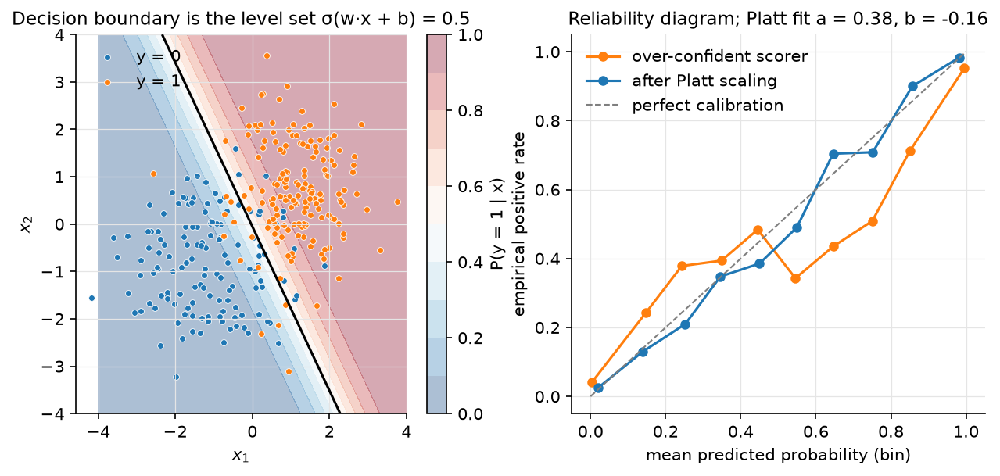

Logistic & softmax regression¶
Why this matters at staff level. "Derive the gradient of cross-entropy through the softmax" is the single most common ML-depth question, because it is the last layer of every classifier, every language model, and every RLHF reward head. Logistic regression is also what the largest ad systems in the world ran for a decade, what Platt/temperature calibration is, and the model whose convexity you lose the moment you add a hidden layer. Strong signal: derive \(p - y\) twice (sigmoid and softmax), explain Newton/IRLS, name what class imbalance and thresholds do to a calibrated model, and cite where it runs in production.
TL;DR: the interview card¶
- Bernoulli MLE: \(p = \sigma(z)\), \(z = Xw\), \(\sigma(z) = 1/(1+e^{-z})\), log-odds \(\log\frac{p}{1-p} = z\). Negative log-likelihood is the binary cross-entropy \(L = -\tfrac1N\sum_i [y_i\log p_i + (1-y_i)\log(1-p_i)]\).
- \(\sigma'(z) = \sigma(z)(1-\sigma(z))\); gradient \(\boxed{\nabla_w L = \tfrac1N X^T(p - y)}\); Hessian \(\boxed{H = \tfrac1N X^T\diag(p\odot(1-p))X}\), PSD \(\Rightarrow\) convex.
- Newton = IRLS: \(w \leftarrow w - H^{-1}\nabla L\), each step a weighted least squares with weights \(p(1-p)\). Quadratic convergence, \(O(Nd^2 + d^3)\) per step. Separable data \(\Rightarrow\) \(\norm{w}\to\infty\); add L2.
- Softmax: \(p_k = e^{z_k}/\sum_j e^{z_j}\); Jacobian \(\partial p_i/\partial z_j = p_i(\delta_{ij} - p_j)\); chain rule with \(L = -\log p_y\) gives \(\boxed{\partial L/\partial z = p - y}\).
- Log-sum-exp: \(\log\sum_j e^{z_j} = m + \log\sum_j e^{z_j - m}\), \(m = \max_j z_j\). Never exponentiate raw logits.
- Temperature \(T\): \(\softmax(z/T)\), gradient scales by \(1/T\); label smoothing \(y_{ls} = (1-\epsilon)y + \epsilon/K\) makes the gradient \(p - y_{ls}\), so logits stop growing once \(p_{\text{wrong}} \approx \epsilon/K\).
- Class imbalance: reweighting by \(N/(2N_c)\) shifts the intercept by \(\approx\log\frac{N_1}{N_0}\) and decalibrates; thresholding a calibrated model at the cost-derived cutoff \(t = \frac{c_{FP}}{c_{FP}+c_{FN}}\) is usually the right fix instead.
- Platt scaling is 1-D logistic regression on the score: \(P(y=1\mid s) = \sigma(as + b)\). Temperature scaling is Platt with \(b = 0\).
- Softmax vs one-vs-rest: softmax gives a normalised distribution and shares the intercept; OvR is \(K\) independent problems, easy to parallelise and add classes to, but scores don't sum to 1.
- Production: Google ads CTR (FTRL logistic regression), Facebook ads (GBDT features → logistic regression, +3% over either alone), calibration layers everywhere.
1. Intuition first¶
Four emails, one feature (count of the word "free"), and a label (spam):
| \(x\) | 0 | 1 | 3 | 5 |
|---|---|---|---|---|
| \(y\) | 0 | 0 | 1 | 1 |
A line \(\hat y = w_1 x + w_0\) can output \(-0.3\) or \(1.7\), which are not probabilities, and squared error would penalise a confident correct answer (\(\hat y = 1.7\) for \(y = 1\)). Two fixes at once: squash the line through \(\sigma(z) = 1/(1+e^{-z})\) so outputs live in \((0,1)\), and score it by how much probability it assigns to the observed labels (likelihood). With \(w = (-2, 1)\) the model says \(p = \sigma(-2), \sigma(-1), \sigma(1), \sigma(3) = 0.12, 0.27, 0.73, 0.95\) and the likelihood is \((1-0.12)(1-0.27)(0.73)(0.95) \approx 0.45\). Maximising this product over \(w\) is logistic regression. The decision boundary is where \(z = 0\), i.e. \(x = 2\); it is a line in feature space (a hyperplane in \(d\) dimensions), so the model is linear, only the loss and the output map changed.
With \(K > 2\) classes we keep one linear score \(z_k\) per class and normalise with the softmax; the sigmoid is the \(K = 2\) special case with \(z = z_1 - z_0\).

Figure. Left: the shaded field is \(P(y = 1\mid x)\) and the solid line is its 0.5 level set, a straight line. Right: a reliability diagram; an over-confident scorer (logits scaled ×3) curves away from the diagonal, and a two-parameter Platt fit \(\sigma(as + b)\) on held-out data brings it back.
2. The math¶
Uses: MLE, Bernoulli/categorical distributions (probability), Jacobians and the chain rule (matrix calculus), convexity and Newton's method (optimization).
2.1 From Bernoulli MLE to binary cross-entropy¶
Model \(y_i \mid x_i \sim \text{Bernoulli}(p_i)\) with \(p_i = \sigma(x_i^T w)\). The likelihood of \(N\) independent labels is \(\prod_i p_i^{y_i}(1-p_i)^{1-y_i}\); its negative mean log is
Meaning: maximum likelihood hands you cross-entropy as soon as you decide the output is a Bernoulli probability. Nobody picked it for aesthetic reasons. The choice of \(\sigma\) follows from asking the log-odds to be linear: \(\log\frac{p}{1-p} = z \Leftrightarrow p = \sigma(z)\).
Useful identities: \(1 - \sigma(z) = \sigma(-z)\), \(\log\sigma(z) = -\log(1+e^{-z}) = -\text{softplus}(-z)\), and \(\sigma'(z) = \sigma(z)(1-\sigma(z))\) (differentiate \((1+e^{-z})^{-1}\)).
2.2 Gradient, Hessian, convexity¶
For one example, \(\ell = -[y\log\sigma(z) + (1-y)\log\sigma(-z)]\). Using \(\frac{d}{dz}\log\sigma(z) = 1 - \sigma(z)\) and \(\frac{d}{dz}\log\sigma(-z) = -\sigma(z)\):
Chain rule through \(z = x^Tw\) and average over examples:
Differentiate again: \(\partial p_i/\partial w = p_i(1-p_i)x_i\), so
Every \(p_i(1-p_i) \in (0, \tfrac14]\) is positive, so \(v^THv = \tfrac1N\sum_i p_i(1-p_i)(x_i^Tv)^2 \ge 0\): \(H\) is PSD and \(L\) is convex, any local minimum is global, and gradient descent with a small enough step converges. Adding \(\tfrac{\lambda}{2}\norm{w}^2\) makes it strictly convex with a unique minimiser.
Meaning: the gradient has the same form as least squares, \(X^T(\text{prediction} - \text{target})\); only the prediction passes through \(\sigma\). The curvature \(p(1-p)\) is largest at \(p = \tfrac12\): the loss is most curved (learns fastest) near the decision boundary and flat for confidently classified points.
2.3 Newton's method is iteratively reweighted least squares¶
Newton: \(w \leftarrow w - H^{-1}\nabla L = w - (X^TRX)^{-1}X^T(p - y)\). Rewrite with the working response \(\tilde z = Xw - R^{-1}(p - y)\):
which is the solution of the weighted least-squares problem \(\min_w \sum_i R_{ii}(\tilde z_i - x_i^Tw)^2\). Each Newton step refits a linear regression whose weights \(p_i(1-p_i)\) emphasise uncertain points and whose targets are the current logits corrected by the residual. Convergence is quadratic near the optimum (typically 5–10 iterations to machine precision) at \(O(Nd^2 + d^3)\) per step, so it is the method of choice for \(d \lesssim 10^4\); beyond that use L-BFGS or SGD.
Separable data. If some \(w\) classifies every point correctly, then scaling \(w \to cw\) with \(c \to \infty\) drives every \(p_i \to y_i\) and \(L \to 0\) without ever reaching it: the MLE does not exist, weights blow up, Newton's Hessian becomes singular (\(p(1-p) \to 0\)). L2 regularisation fixes it; so does early stopping.
2.4 Class imbalance, weighting and thresholds¶
With 1% positives an unweighted model learns an intercept near \(\log(0.01/0.99)\)
and is calibrated: it says 1% because 1% is true. Reweighting each class to
\(N/(2N_c)\) (balanced_class_weights) is equivalent to changing the prior; the
fitted intercept shifts by \(\approx \log\frac{N_0}{N_1}\) and the model now reports
\(\approx 50\%\) for an average example, useful for the ranking metric you optimise
under, harmful if anyone consumes the probabilities.
Decide from costs instead. If a false positive costs \(c_{FP}\) and a false negative \(c_{FN}\), predict positive iff \(p\,c_{FN} > (1-p)\,c_{FP}\), i.e. \(p > c_{FP}/(c_{FP}+c_{FN})\). The threshold, not the training weights, is where business costs enter; keep the model calibrated and move the threshold. When you do reweight (to get gradient signal from a rare class), re-calibrate afterwards.
2.5 Calibration and Platt scaling¶
A model is calibrated if among examples with predicted \(p \approx 0.7\), about 70% are positive. Logistic regression trained by MLE is calibrated in-distribution (the score equation \(X^T(p - y) = 0\) with an intercept column forces \(\sum_i p_i = \sum_i y_i\)). Models that are not (SVMs, boosted trees, deep nets with heavy augmentation) are fixed post hoc by Platt scaling: fit \(P(y = 1\mid s) = \sigma(as + b)\) on a held-out set, where \(s\) is the model's raw score. That is a two-parameter logistic regression, solved with the same Newton iteration. Temperature scaling for deep nets is the special case \(b = 0\), \(a = 1/T\) applied to the logits, and for \(K\) classes divides the whole logit vector by \(T\) (which preserves the argmax). Isotonic regression is the non-parametric alternative (monotone step function; needs more data).
2.6 Softmax: the full derivation of \(\partial L/\partial z = p - y\)¶
For \(K\) classes with logits \(z \in \R^K\) define \(p_k = \softmax(z)_k = e^{z_k}/\sum_j e^{z_j}\). The categorical MLE for a one-hot target \(y\) gives \(L = -\sum_k y_k\log p_k = -\log p_c\) where \(c\) is the true class.
Step 1, the Jacobian of softmax. With \(Z = \sum_j e^{z_j}\),
As a matrix, \(J = \diag(p) - pp^T \in \R^{K\times K}\). It is symmetric, PSD, and has \(J\mathbf{1} = p - p(p^T\mathbf 1) = 0\): shifting all logits by a constant changes nothing.
Step 2, chain rule. \(\partial L/\partial p_k = -y_k/p_k\), so
Meaning: the \(1/p_k\) from the log exactly cancels the \(p_k\) from the softmax Jacobian, so the gradient never blows up for a confidently wrong prediction, the whole point of pairing softmax with cross-entropy (the same cancellation happens for sigmoid + BCE, and for any exponential-family output with its canonical link). Averaging over a batch and pushing through \(Z = XW\): \(\nabla_W L = \tfrac1N X^T(P - Y) \in \R^{d\times K}\).
Numerical stability. \(\log p_k = z_k - \log\sum_j e^{z_j}\), and
\(\log\sum_j e^{z_j} = m + \log\sum_j e^{z_j - m}\) with \(m = \max_j z_j\); the largest
exponent is then \(e^0 = 1\), so nothing overflows. Compute log_softmax this way and
get softmax by exponentiating it; never write np.exp(z) / np.exp(z).sum().
Temperature. \(p^{(T)} = \softmax(z/T)\); by the chain rule \(\nabla_z L = (p^{(T)} - y)/T\). \(T > 1\) flattens (used for distillation and calibration), \(T \to 0\) approaches argmax, \(T\) multiplies the effective learning rate on the logits by \(1/T\).
Label smoothing. Replace \(y\) by \(y_{ls} = (1-\epsilon)y + \epsilon/K\). The derivation above never used that \(y\) is one-hot except \(\sum_k y_k = 1\), which still holds, so \(\nabla_z L = p - y_{ls}\). The gradient on a wrong class is \(p_j - \epsilon/K\) and vanishes when \(p_j = \epsilon/K\) rather than at \(p_j = 0\); the optimum logit gap between the true class and the others becomes finite, \(\log\frac{(1-\epsilon)(K-1)}{\epsilon} + \dots\), instead of infinite. That is why label smoothing regularises and improves calibration (Müller et al., 2019).
2.7 Softmax vs one-vs-rest¶
One-vs-rest trains \(K\) independent sigmoids \(\sigma(x^Tw_k)\) on "class \(k\) or not" and predicts \(\argmax_k\). It is embarrassingly parallel, lets you add a class without retraining the others, and works with any binary learner. But the \(K\) scores are not a distribution (they can all be \(0.9\)), the negatives for each head are imbalanced \((K-1):1\), and the heads never see each other's mistakes. Softmax is a single joint model whose scores compete through the normaliser and whose gradient \(p - y\) couples the classes. Use softmax when classes are mutually exclusive; use \(K\) sigmoids when they are not (multi-label).
3. Implementation¶
Code in src/mlbook/classical/logistic_regression.py and
src/mlbook/classical/softmax_regression.py.
def sigmoid(z: np.ndarray) -> np.ndarray:
out = np.empty_like(z, dtype=float)
pos = z >= 0
out[pos] = 1.0 / (1.0 + np.exp(-z[pos]))
ez = np.exp(z[~pos])
out[~pos] = ez / (1.0 + ez)
return out
The two branches ensure the exponent is always \(\le 0\): for \(z = -1000\),
1/(1+exp(1000)) overflows to inf and yields 0 by luck; exp(-1000)/(1+exp(-1000)) is
exactly \(0\) by design. log_sigmoid uses -np.logaddexp(0, -z) for the same reason.
def bce_gradient(X, y, w, sample_weight=None, l2=0.0):
p = sigmoid(X @ w) # (N,)
s = np.ones_like(y, dtype=float) if sample_weight is None else sample_weight # (N,)
return X.T @ (s * (p - y)) / X.shape[0] + l2 * w # (d,)
def bce_hessian(X, w, sample_weight=None, l2=0.0):
p = sigmoid(X @ w) # (N,)
s = np.ones(X.shape[0]) if sample_weight is None else sample_weight # (N,)
r = s * p * (1.0 - p) # (N,) per-example curvature
return (X * r[:, None]).T @ X / X.shape[0] + l2 * np.eye(X.shape[1]) # (d, d)
(X * r[:, None]).T @ X computes \(X^TRX\) without materialising the \(N\times N\)
diagonal matrix: scale each row of \(X\) by its curvature, then one matmul.
def fit_logistic_newton(X, y, n_steps=20, l2=1e-6, sample_weight=None, tol=1e-10):
w = np.zeros(X.shape[1]) # (d,)
for _ in range(n_steps):
g = bce_gradient(X, y, w, sample_weight, l2) # (d,)
H = bce_hessian(X, w, sample_weight, l2) # (d, d)
step = np.linalg.solve(H, g) # (d,)
w = w - step # (d,)
if np.abs(step).max() < tol:
break
return w
Starting from \(w = 0\) (all \(p_i = \tfrac12\), maximal curvature) is safe; the tiny
default l2 keeps solve well-posed on separable data. platt_scaling(scores, y)
stacks [scores, 1] into an \((N, 2)\) design and calls this function, Platt scaling
really is logistic regression.
def log_softmax(Z, temperature=1.0):
Zt = Z / temperature # (N, K)
m = Zt.max(axis=1, keepdims=True) # (N, 1)
lse = m + np.log(np.exp(Zt - m).sum(axis=1, keepdims=True)) # (N, 1)
return Zt - lse # (N, K)
def cross_entropy_grad_logits(Z, Y, temperature=1.0):
p = softmax(Z, temperature) # (N, K)
return (p - Y) / (temperature * Z.shape[0]) # (N, K)
def softmax_regression_grad(X, Y, W, l2=0.0):
Z = X @ W # (N, K)
dZ = cross_entropy_grad_logits(Z, Y) # (N, K) (P - Y)/N
return X.T @ dZ + l2 * W # (d, K)
softmax_jacobian(p) returns np.diag(p) - np.outer(p, p) for a single example and
exists only so the test can confirm §2.6 step 1 numerically; the training code never
forms it, because the chain rule has already collapsed it into \(p - y\).
How you'd test it. tests/test_classical_logistic.py: sigmoid at \(\pm1000\) is
finite and exact; bce_gradient and bce_hessian against central finite differences
with random sample weights and L2; Hessian eigenvalues \(\ge 0\); Newton and GD agree
to \(10^{-3}\) and reach \(\norm{\nabla L}_\infty < 10^{-8}\); Platt scaling recovers a planted
\((a, b) = (2, -0.5)\); softmax Jacobian and \(\nabla_Z L\) (with smoothing and
temperature) against finite differences; fit_softmax_gd reaches \(>95\%\) on three
Gaussian blobs and label smoothing shrinks \(\norm{W}\).
Full implementation: src/mlbook/classical/logistic_regression.py
"""Binary logistic regression from scratch: sigmoid, Bernoulli negative
log-likelihood, gradient ``X^T (p - y)``, Hessian ``X^T diag(p(1-p)) X``,
gradient descent, Newton / IRLS, class weighting, and Platt scaling.
Conventions: ``X`` is ``(N, d)`` (add a bias column yourself), ``y`` is ``(N,)``
with entries in ``{0, 1}``, ``w`` is ``(d,)``.
"""
from __future__ import annotations
import numpy as np
def sigmoid(z: np.ndarray) -> np.ndarray:
"""Numerically stable ``σ(z) = 1 / (1 + e^{-z})``, elementwise.
For ``z >= 0`` use ``1 / (1 + e^{-z})``; for ``z < 0`` use ``e^{z} / (1 + e^{z})``
so the exponent is never large and positive.
"""
out = np.empty_like(z, dtype=float)
pos = z >= 0
out[pos] = 1.0 / (1.0 + np.exp(-z[pos]))
ez = np.exp(z[~pos])
out[~pos] = ez / (1.0 + ez)
return out
def log_sigmoid(z: np.ndarray) -> np.ndarray:
"""``log σ(z) = -softplus(-z) = -log(1 + e^{-z})`` computed stably."""
return -np.logaddexp(0.0, -z)
def bce_loss(
X: np.ndarray, y: np.ndarray, w: np.ndarray, sample_weight: np.ndarray | None = None, l2: float = 0.0
) -> float:
"""Mean binary cross-entropy (negative Bernoulli log-likelihood) plus ``(l2/2)||w||^2``.
``L = -(1/N) Σ_i s_i [ y_i log σ(z_i) + (1 - y_i) log(1 - σ(z_i)) ]`` with ``z = Xw``.
``X``: (N, d), ``y``: (N,), ``w``: (d,), ``sample_weight``: (N,) or None.
"""
z = X @ w # (N,)
s = np.ones_like(y, dtype=float) if sample_weight is None else sample_weight # (N,)
per_example = -(y * log_sigmoid(z) + (1.0 - y) * log_sigmoid(-z)) # (N,)
return float((s * per_example).sum() / X.shape[0] + 0.5 * l2 * (w @ w))
def bce_gradient(
X: np.ndarray, y: np.ndarray, w: np.ndarray, sample_weight: np.ndarray | None = None, l2: float = 0.0
) -> np.ndarray:
"""``∇_w L = (1/N) X^T (s ⊙ (p - y)) + l2 w`` with ``p = σ(Xw)``.
``X``: (N, d), ``y``: (N,), ``w``: (d,) -> (d,).
"""
p = sigmoid(X @ w) # (N,)
s = np.ones_like(y, dtype=float) if sample_weight is None else sample_weight # (N,)
return X.T @ (s * (p - y)) / X.shape[0] + l2 * w # (d,)
def bce_hessian(
X: np.ndarray, w: np.ndarray, sample_weight: np.ndarray | None = None, l2: float = 0.0
) -> np.ndarray:
"""``H = (1/N) X^T diag(s ⊙ p ⊙ (1 - p)) X + l2 I``. PSD, so the loss is convex.
``X``: (N, d), ``w``: (d,) -> (d, d).
"""
p = sigmoid(X @ w) # (N,)
s = np.ones(X.shape[0]) if sample_weight is None else sample_weight # (N,)
r = s * p * (1.0 - p) # (N,) per-example curvature
return (X * r[:, None]).T @ X / X.shape[0] + l2 * np.eye(X.shape[1]) # (d, d)
def fit_logistic_gd(
X: np.ndarray,
y: np.ndarray,
lr: float = 0.1,
n_steps: int = 2000,
l2: float = 0.0,
sample_weight: np.ndarray | None = None,
) -> np.ndarray:
"""Full-batch gradient descent on the (weighted, L2-regularised) BCE.
``X``: (N, d), ``y``: (N,) -> ``w``: (d,).
"""
w = np.zeros(X.shape[1]) # (d,)
for _ in range(n_steps):
w = w - lr * bce_gradient(X, y, w, sample_weight, l2) # (d,)
return w
def fit_logistic_newton(
X: np.ndarray,
y: np.ndarray,
n_steps: int = 20,
l2: float = 1e-6,
sample_weight: np.ndarray | None = None,
tol: float = 1e-10,
) -> np.ndarray:
"""Newton's method (equivalently IRLS): ``w ← w - H^{-1} ∇L``.
Each step solves a weighted least-squares problem with weights
``p(1-p)`` and working response ``z + (y - p) / (p(1-p))``. Quadratic
convergence near the optimum; ``O(N d^2 + d^3)`` per step.
A small ``l2`` keeps ``H`` invertible when the data are separable.
``X``: (N, d), ``y``: (N,) -> ``w``: (d,).
"""
w = np.zeros(X.shape[1]) # (d,)
for _ in range(n_steps):
g = bce_gradient(X, y, w, sample_weight, l2) # (d,)
H = bce_hessian(X, w, sample_weight, l2) # (d, d)
step = np.linalg.solve(H, g) # (d,)
w = w - step # (d,)
if np.abs(step).max() < tol:
break
return w
def balanced_class_weights(y: np.ndarray) -> np.ndarray:
"""Per-example weights ``N / (2 N_c)`` so each class contributes equally.
``y``: (N,) in {0,1} -> (N,).
"""
n_pos = y.sum()
n_neg = len(y) - n_pos
w_pos = len(y) / (2.0 * max(n_pos, 1))
w_neg = len(y) / (2.0 * max(n_neg, 1))
return np.where(y == 1, w_pos, w_neg) # (N,)
def predict_proba(X: np.ndarray, w: np.ndarray) -> np.ndarray:
"""``σ(Xw)``. ``X``: (N, d), ``w``: (d,) -> (N,)."""
return sigmoid(X @ w)
def predict_label(X: np.ndarray, w: np.ndarray, threshold: float = 0.5) -> np.ndarray:
"""Threshold the probability. Choose ``threshold`` from the cost matrix, not 0.5 by reflex."""
return (predict_proba(X, w) >= threshold).astype(int) # (N,)
def platt_scaling(scores: np.ndarray, y: np.ndarray, n_steps: int = 50) -> tuple[float, float]:
"""Fit ``P(y=1 | s) = σ(a s + b)`` by Newton's method. Platt scaling *is*
1-D logistic regression on the model's raw score.
``scores``: (N,), ``y``: (N,) in {0,1} -> ``(a, b)``.
"""
Xs = np.stack([scores, np.ones_like(scores)], axis=1) # (N, 2)
w = fit_logistic_newton(Xs, y, n_steps=n_steps, l2=1e-8) # (2,)
return float(w[0]), float(w[1])
def one_vs_rest_fit(X: np.ndarray, y: np.ndarray, n_classes: int, **kwargs) -> np.ndarray:
"""Train ``K`` independent binary classifiers (class k vs the rest).
``X``: (N, d), ``y``: (N,) in {0..K-1} -> ``W``: (d, K).
"""
W = np.zeros((X.shape[1], n_classes)) # (d, K)
for k in range(n_classes):
W[:, k] = fit_logistic_newton(X, (y == k).astype(float), **kwargs) # (d,)
return W
def one_vs_rest_predict(X: np.ndarray, W: np.ndarray) -> np.ndarray:
"""Argmax over the ``K`` sigmoid scores (they need not sum to 1).
``X``: (N, d), ``W``: (d, K) -> (N,).
"""
scores = sigmoid(X @ W) # (N, K)
return scores.argmax(axis=1) # (N,)
Full implementation: src/mlbook/classical/softmax_regression.py
"""Softmax (multinomial logistic) regression from scratch.
Key results implemented here:
* ``softmax(z)_k = exp(z_k - m) / Σ_j exp(z_j - m)`` with ``m = max_j z_j``
(log-sum-exp stabilisation);
* ``∂L/∂z = p - y`` for cross-entropy on top of softmax (the Jacobian of
softmax is ``diag(p) - p p^T`` and it collapses when chained with ``-log p_y``);
* temperature ``softmax(z / T)`` and label smoothing ``y_ls = (1-ε) y + ε / K``.
Conventions: logits ``Z = X W`` with ``X`` (N, d), ``W`` (d, K), ``Z`` (N, K).
"""
from __future__ import annotations
import numpy as np
def log_softmax(Z: np.ndarray, temperature: float = 1.0) -> np.ndarray:
"""``log softmax(Z / T)`` row-wise, computed as ``z - logsumexp(z)``.
``Z``: (N, K) -> (N, K).
"""
Zt = Z / temperature # (N, K)
m = Zt.max(axis=1, keepdims=True) # (N, 1)
lse = m + np.log(np.exp(Zt - m).sum(axis=1, keepdims=True)) # (N, 1)
return Zt - lse # (N, K)
def softmax(Z: np.ndarray, temperature: float = 1.0) -> np.ndarray:
"""Row-wise softmax with max-subtraction. ``Z``: (N, K) -> (N, K), rows sum to 1."""
return np.exp(log_softmax(Z, temperature)) # (N, K)
def softmax_jacobian(p: np.ndarray) -> np.ndarray:
"""Jacobian ``∂p_i/∂z_j = p_i (δ_ij - p_j)`` for one example.
``p``: (K,) -> (K, K), equals ``diag(p) - p p^T``.
"""
return np.diag(p) - np.outer(p, p) # (K, K)
def one_hot(y: np.ndarray, n_classes: int) -> np.ndarray:
"""``y``: (N,) integer labels -> (N, K) one-hot."""
Y = np.zeros((len(y), n_classes)) # (N, K)
Y[np.arange(len(y)), y] = 1.0
return Y
def smooth_labels(Y: np.ndarray, eps: float) -> np.ndarray:
"""Label smoothing ``(1 - ε) Y + ε / K``. ``Y``: (N, K) -> (N, K)."""
K = Y.shape[1]
return (1.0 - eps) * Y + eps / K # (N, K)
def cross_entropy(Z: np.ndarray, Y: np.ndarray, temperature: float = 1.0) -> float:
"""Mean cross-entropy ``-(1/N) Σ_i Σ_k Y_ik log p_ik``.
``Z``: (N, K) logits, ``Y``: (N, K) (one-hot or smoothed targets).
"""
logp = log_softmax(Z, temperature) # (N, K)
return float(-(Y * logp).sum() / Z.shape[0])
def cross_entropy_grad_logits(Z: np.ndarray, Y: np.ndarray, temperature: float = 1.0) -> np.ndarray:
"""``∂L/∂Z = (1/N) (p - Y) / T``. ``Z``: (N, K), ``Y``: (N, K) -> (N, K).
With smoothed labels the gradient is ``p - y_ls``: the model is pushed
toward ``ε/K`` on the wrong classes instead of exactly zero, so logits stop
growing without bound.
"""
p = softmax(Z, temperature) # (N, K)
return (p - Y) / (temperature * Z.shape[0]) # (N, K)
def softmax_regression_loss(X: np.ndarray, Y: np.ndarray, W: np.ndarray, l2: float = 0.0) -> float:
"""Cross-entropy of ``softmax(XW)`` plus ``(l2/2) ||W||_F^2``."""
Z = X @ W # (N, K)
return cross_entropy(Z, Y) + 0.5 * l2 * float((W * W).sum())
def softmax_regression_grad(X: np.ndarray, Y: np.ndarray, W: np.ndarray, l2: float = 0.0) -> np.ndarray:
"""``∇_W L = (1/N) X^T (P - Y) + l2 W``. ``X``: (N, d), ``Y``: (N, K), ``W``: (d, K) -> (d, K)."""
Z = X @ W # (N, K)
dZ = cross_entropy_grad_logits(Z, Y) # (N, K) (P - Y)/N
return X.T @ dZ + l2 * W # (d, K)
def fit_softmax_gd(
X: np.ndarray, y: np.ndarray, n_classes: int, lr: float = 0.5, n_steps: int = 2000,
l2: float = 0.0, label_smoothing: float = 0.0,
) -> np.ndarray:
"""Full-batch gradient descent for softmax regression.
``X``: (N, d), ``y``: (N,) integer labels -> ``W``: (d, K).
"""
Y = one_hot(y, n_classes) # (N, K)
if label_smoothing > 0:
Y = smooth_labels(Y, label_smoothing) # (N, K)
W = np.zeros((X.shape[1], n_classes)) # (d, K)
for _ in range(n_steps):
W = W - lr * softmax_regression_grad(X, Y, W, l2) # (d, K)
return W
def predict(X: np.ndarray, W: np.ndarray) -> np.ndarray:
"""Argmax class. ``X``: (N, d), ``W``: (d, K) -> (N,)."""
return (X @ W).argmax(axis=1) # (N,)
Retype by hand¶
Reproduce from memory:
| Symbol (file) | What it must do | Target time |
|---|---|---|
sigmoid, log_sigmoid (logistic_regression.py) |
two-branch stable sigmoid; -logaddexp(0, -z) |
5 min |
bce_loss, bce_gradient, bce_hessian (logistic_regression.py) |
BCE with weights + L2; \(\tfrac1N X^T(p-y)\); \(\tfrac1N X^TRX\) | 12 min |
fit_logistic_gd, fit_logistic_newton (logistic_regression.py) |
GD loop; Newton with solve(H, g) |
8 min |
platt_scaling (logistic_regression.py) |
stack [s, 1], call Newton |
3 min |
log_softmax, softmax, softmax_jacobian (softmax_regression.py) |
max-subtracted LSE; \(\diag(p) - pp^T\) | 8 min |
cross_entropy, cross_entropy_grad_logits, softmax_regression_grad (softmax_regression.py) |
\(-(1/N)\sum Y\log P\); \((P - Y)/(TN)\); \(X^T dZ\) | 8 min |
Fine to just read: balanced_class_weights, predict_proba, predict_label,
one_vs_rest_fit/predict, one_hot, smooth_labels, fit_softmax_gd, predict.
Check with pytest tests/test_classical_logistic.py -q. Both files from blank:
45 minutes.
4. Systems view: cost, failure modes, trade-offs¶
| Method | Per-step cost | Steps to converge | Use when |
|---|---|---|---|
| Newton / IRLS | \(O(Nd^2 + d^3)\) | 5–10 | \(d \le 10^4\); want exact MLE, standard errors |
| L-BFGS | \(O(Nd)\) + \(O(md)\) history | 50–200 | \(d\) up to \(10^6\), dense, batch |
| SGD / Adagrad / FTRL | \(O(\text{nnz}(x_i))\) | one or few passes | streaming, sparse, \(N\to\infty\) |
| One-vs-rest (\(K\) heads) | \(K\times\) binary cost, parallel | : | many non-exclusive classes, incremental classes |
| Softmax | \(O(NdK)\) per step | : | exclusive classes; \(K\) up to vocabulary size |
Failure modes:
- Separable data / rare features. Weights on a feature seen only with positives diverge. Fix: L2, or the per-coordinate learning-rate decay of FTRL/Adagrad which naturally damps rarely-seen coordinates.
- Over-confidence at the softmax with large \(K\). Cross-entropy keeps pushing the true logit up until \(p_c \approx 1\); label smoothing or temperature scaling restores calibration. With \(K = |V| \sim 10^5\) (language models) the softmax matmul \(O(dK)\) is the cost; hierarchical/sampled softmax and adaptive softmax exist for that reason.
- Reweighting destroys calibration (§2.4). Re-calibrate or move the threshold.
- Feature drift shifts the intercept first; monitoring the mean predicted probability against the observed positive rate (a one-number calibration check) catches it early.
- Unstable softmax. Raw
expoverflows above \(z \approx 709\) in float64 and \(88\) in float32. Always LSE.
When to use what. Need probabilities you can trust and a convex problem → logistic/softmax regression, Newton if small, SGD if large. Tabular features with interactions you don't want to engineer → trees, then logistic regression on the leaves (Facebook's recipe). A deep model that is over-confident → keep it, add Platt/temperature scaling on held-out logits. Multi-label → \(K\) sigmoids, not softmax.
5. In production¶
Google: FTRL-Proximal logistic regression for ads CTR
Problem: \(P(\text{click})\) over billions of sparse binary features (query × ad crosses), updated online. What they built: logistic regression trained with FTRL-Proximal (per-coordinate learning rates, L1 for sparsity), with calibration layers on top and confidence estimates from the per-coordinate statistics. Rejected: plain SGD (worse sparsity for equal accuracy) and heavier models (latency/memory). The paper reports that the calibration layer was needed because training-set biases and the isotonic/Platt fixes were cheap wins. McMahan et al., KDD 2013. research.google.
Facebook: GBDT leaves → logistic regression
Problem: ads CTR with 750M daily users. What they built: boosted decision trees as a feature transformer (each tree's leaf index becomes a one-hot feature) feeding a logistic regression trained online; the combination beat either model alone by over 3% in normalised entropy. Trade-off: trees give non-linear feature crosses cheaply; the linear layer gives online updates and calibrated probabilities. They also report that data freshness (retraining the linear part daily) matters more than model tweaks. He et al., ADKDD 2014. ai.meta.com.
Post-hoc calibration everywhere: Platt (1999), Guo et al. (2017)
Platt introduced sigmoid fitting on SVM outputs; Guo et al. showed modern deep nets are badly over-confident and that temperature scaling (one parameter, a Platt fit with no bias) is "surprisingly effective". Any production classifier whose scores drive a threshold, a bid, or a ranking cutoff has one of these fitted on a held-out slice. Platt, Advances in Large Margin Classifiers, 1999 (MIT Press; see Lin, Lin & Weng's note for the numerically stable fit); Guo et al., ICML 2017, arXiv:1706.04599.
Stripe: Radar's first model
Stripe describes starting fraud detection with logistic regression before moving to tree ensembles and then a deep network, each step justified by measured precision/recall gains at fixed latency (their public number: under 100 ms per decision). Drapeau, 2023, stripe.dev.
6. Interview questions and strong answers¶
Derive \(\partial L/\partial z\) for softmax + cross-entropy.
Jacobian \(\partial p_i/\partial z_j = p_i(\delta_{ij} - p_j)\) via the quotient rule; chain with \(\partial L/\partial p_k = -y_k/p_k\); the \(p_k\) cancels, leaving \(-y_j + p_j\sum_k y_k = p_j - y_j\). Say out loud that the cancellation is why we never form the Jacobian and why the gradient is bounded even when \(p_c \to 0\). Staff follow-up: what changes with label smoothing or a temperature? \(\sum_k y_k = 1\) still holds, so the gradient is \(p - y_{ls}\); with \(T\) it is \((p^{(T)} - y)/T\). What is the Hessian w.r.t. \(z\)? \(\diag(p) - pp^T\), PSD, so the loss is convex in the logits.
Why cross-entropy and not squared error for classification?
Cross-entropy is the Bernoulli/categorical MLE, so it is consistent and gives calibrated probabilities; its gradient through the sigmoid is \(p - y\), whereas squared error's is \((p - y)p(1-p)\), which vanishes for confidently wrong predictions (saturation) and makes the problem non-convex in \(w\). Follow-up: is there any case for Brier score (squared error on probabilities)? As an evaluation metric it is proper and bounded; as a training loss the saturation argument stands.
Explain IRLS and when you'd use it over SGD.
Newton's step for logistic loss is a weighted least squares with weights \(p(1-p)\) and working response \(z + (y-p)/(p(1-p))\). Quadratic convergence, but \(O(Nd^2 + d^3)\) per iteration, so it wins for \(d\) up to a few thousand and loses to SGD/L-BFGS beyond that. Follow-up: what breaks on separable data? The MLE does not exist; \(H\) becomes singular as \(p \to \{0,1\}\). Add L2.
Your positive rate is 0.5%. Do you reweight?
Only if the ranking metric (AUC/PR-AUC) demonstrably improves, and then re-calibrate, because reweighting shifts the intercept by \(\approx\log(N_0/N_1)\) and the probabilities become meaningless. Usually better: keep the model calibrated and pick the threshold from costs, \(t = c_{FP}/(c_{FP}+c_{FN})\). Follow-up: what if there are only 50 positives in total? Then the problem is variance, not imbalance: stronger regularisation, fewer features, or a generative/anomaly formulation (probabilistic models).
What is Platt scaling, and how is it different from temperature scaling?
Platt: fit \(\sigma(as + b)\) on held-out scores by MLE. That is a 1-D logistic regression with two parameters. Temperature scaling: divide the logit vector by \(T\), one parameter, no bias, preserves the argmax; it is Platt with \(b = 0\) generalised to \(K\) classes. Both are fit on data the model did not train on. Follow-up: when does Platt fail? When the score-to-probability map is not sigmoid-shaped (e.g. boosted trees with heavy shrinkage). Use isotonic regression instead, given enough data.
Softmax over 100k classes is too slow. Options?
The cost is the \(d\times K\) matmul and the normaliser. Options: sampled softmax / negative sampling (biased but cheap), hierarchical softmax (\(O(d\log K)\)), adaptive softmax (frequent classes in a small head), or a two-tower retrieval setup where you never normalise over all \(K\). Follow-up: what does this cost you at inference? Nothing if you only need the argmax over a candidate set; everything if you need calibrated probabilities over all \(K\).
One-vs-rest gave 0.9, 0.9, 0.9 for three classes. What happened?
Each head is trained independently and never sees that the others also fired; the scores are not a distribution. Softmax couples them through the normaliser. If the classes really can co-occur (multi-label), OvR is correct and you should stop interpreting the outputs as exclusive.
7. Exercises¶
★ Exercise 1. Show \(\sigma(-z) = 1 - \sigma(z)\) and \(\sigma'(z) = \sigma(z)(1-\sigma(z))\).
Solution
\(\sigma(-z) = \frac{1}{1+e^{z}} = \frac{e^{-z}}{e^{-z}+1} = 1 - \frac{1}{1+e^{-z}}\). \(\sigma'(z) = \frac{e^{-z}}{(1+e^{-z})^2} = \frac{1}{1+e^{-z}}\cdot\frac{e^{-z}}{1+e^{-z}} = \sigma(z)\sigma(-z)\).
★★ Exercise 2. Prove that with an intercept column, the MLE of logistic regression satisfies \(\sum_i p_i = \sum_i y_i\) (the model is calibrated on average).
Solution
The gradient component for the intercept is \(\tfrac1N\mathbf 1^T(p - y)\); at the optimum every component of the gradient is zero, so \(\sum_i p_i = \sum_i y_i\). The same argument for any binary feature column \(x_j\) gives \(\sum_{i: x_{ij}=1}p_i = \sum_{i: x_{ij}=1}y_i\): calibration within every one-hot slice.
★★ Exercise 3 (coding). Implement fit_softmax_newton(X, y, K, l2) using the
full \((dK)\times(dK)\) Hessian \(\tfrac1N\sum_i (\diag(p_i) - p_ip_i^T)\otimes x_ix_i^T + \lambda I\),
and check it agrees with fit_softmax_gd on the three-blob dataset from the tests.
Solution
def fit_softmax_newton(X, y, K, l2=1e-3, n_steps=15):
from mlbook.classical.softmax_regression import one_hot, softmax, softmax_regression_grad
N, d = X.shape
Y = one_hot(y, K) # (N, K)
W = np.zeros((d, K)) # (d, K)
for _ in range(n_steps):
P = softmax(X @ W) # (N, K)
H = np.zeros((d * K, d * K)) # (dK, dK)
for i in range(N):
J = np.diag(P[i]) - np.outer(P[i], P[i]) # (K, K)
H += np.kron(J, np.outer(X[i], X[i])) # (dK, dK), ordering: class-major
H = H / N + l2 * np.eye(d * K)
g = softmax_regression_grad(X, Y, W, l2) # (d, K)
step = np.linalg.solve(H, g.T.ravel()) # class-major flattening matches kron
W = W - step.reshape(K, d).T
return W
l2 term removes; without it solve fails.
★★ Exercise 4. With label smoothing \(\epsilon\) and \(K\) classes, find the optimal logit gap \(\Delta = z_c - z_j\) (\(j \ne c\), all wrong classes equal) for a single example.
Solution
The gradient is zero when \(p = y_{ls}\): \(p_c = 1 - \epsilon + \epsilon/K\) and \(p_j = \epsilon/K\). So \(e^{\Delta} = p_c/p_j = \frac{K(1-\epsilon)+\epsilon}{\epsilon}\) and \(\Delta = \log\frac{K(1-\epsilon)+\epsilon}{\epsilon}\); for \(K = 1000\), \(\epsilon = 0.1\) this is \(\approx 9.1\) instead of \(\infty\).
★★★ Exercise 5. Show that the logistic loss is \(1/4\)-smooth in \(z\) (its second derivative is at most \(1/4\)) and use this to give a step size for gradient descent on \(w\) that guarantees monotone decrease.
Solution
\(\ell''(z) = p(1-p) \le \tfrac14\) (maximised at \(p = \tfrac12\)). Then \(H = \tfrac1N X^TRX \preceq \tfrac{1}{4N}X^TX\), so the gradient is Lipschitz with \(L = \lambda_{\max}(X^TX)/(4N)\) and \(\eta = 1/L = 4N/\lambda_{\max}(X^TX)\) guarantees descent four times the least-squares step of the previous chapter, because the loss is flatter.
References¶
- McMahan, H. B. et al. "Ad Click Prediction: a View from the Trenches." KDD 2013. research.google
- He, X. et al. "Practical Lessons from Predicting Clicks on Ads at Facebook." ADKDD 2014. ai.meta.com
- Platt, J. "Probabilistic Outputs for Support Vector Machines and Comparisons to Regularized Likelihood Methods." Advances in Large Margin Classifiers, MIT Press, 1999. Stable implementation: Lin, Lin, Weng, "A Note on Platt's Probabilistic Outputs for SVMs", Machine Learning 2007. PDF
- Guo, C., Pleiss, G., Sun, Y., Weinberger, K. "On Calibration of Modern Neural Networks." ICML 2017. arXiv:1706.04599
- Zadrozny, B., Elkan, C. "Transforming Classifier Scores into Accurate Multiclass Probability Estimates." KDD 2002 (isotonic calibration). ACM DL
- Müller, R., Kornblith, S., Hinton, G. "When Does Label Smoothing Help?" NeurIPS 2019. arXiv:1906.02629
- Drapeau, R. "How we built it: Stripe Radar." 2023. stripe.dev
- Bishop, C. Pattern Recognition and Machine Learning, §4.3 (IRLS). Free PDF